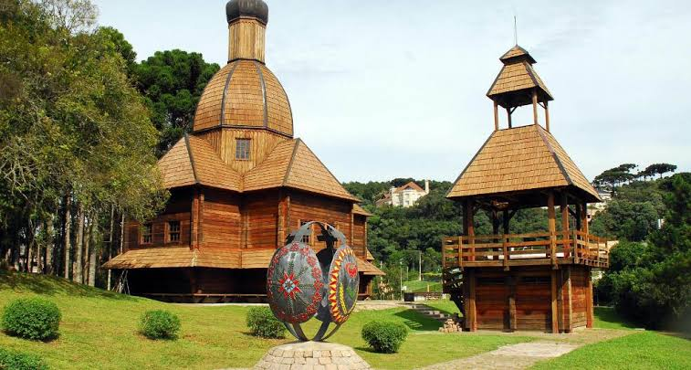
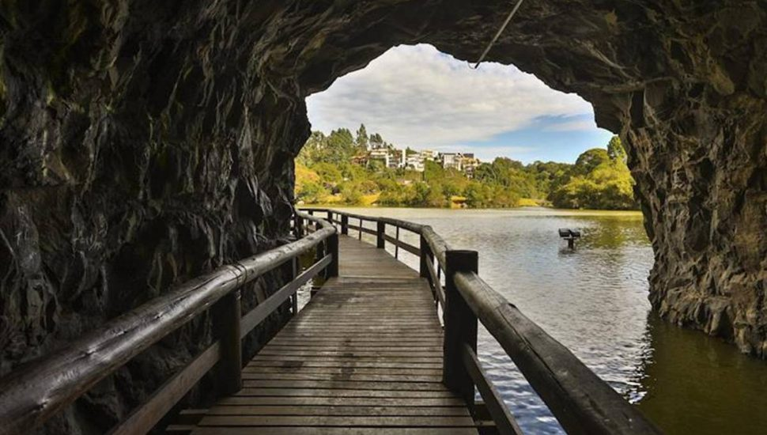

Curitiba: Descubra Seus Parques
Este site apresenta os principais parques de Curitiba, mostrando suas paisagens, características, histórias e a importância desses espaços para a cidade. O estudo busca compreender como os parques contribuem para a preservação da natureza, para o lazer e para a qualidade de vida da população. Além da natureza, os parques também possuem uma forte relação com a arte e a cultura do Paraná, pois muitos deles valorizam a história, a arquitetura, as tradições e a identidade cultural do estado. Assim, o site convida o visitante a conhecer Curitiba por meio de seus parques e descobrir como natureza, arte e cultura se encontram nesses espaços.

A História dos Parques de Curitiba: Natureza, Arte e Cultura
A história dos parques de Curitiba está ligada ao crescimento da cidade, ao planejamento urbano e à preocupação com a preservação ambiental. Um dos primeiros grandes marcos foi o Passeio Público, inaugurado em 2 de maio de 1886, no centro de Curitiba. O espaço surgiu da transformação de uma área alagada em um local de lazer, convivência e melhoria das condições sanitárias da cidade. Durante o século XX, Curitiba passou por um processo de modernização e planejamento urbano. Entre 1941 e 1943, foi elaborado o Plano Agache, que propunha a criação de parques e áreas verdes como parte da organização da cidade e do controle das águas. Em 1965, a criação do Instituto de Pesquisa e Planejamento Urbano de Curitiba, o IPPUC, fortaleceu o planejamento da cidade. Na década de 1970, durante as administrações do arquiteto e urbanista Jaime Lerner, houve uma grande expansão dos parques de Curitiba. Foram criados espaços como os parques Barigui, Barreirinha e São Lourenço. Além de áreas de lazer, esses parques ajudaram na preservação ambiental e no controle de enchentes. Com o passar dos anos, os parques também passaram a representar a cultura e a identidade do Paraná. Alguns possuem memoriais, monumentos, obras de arte e construções que valorizam a história dos povos que contribuíram para a formação do estado, como indígenas, ucranianos, poloneses, italianos e outros grupos de imigrantes. Dessa forma, a história dos parques de Curitiba representa a união entre natureza, urbanismo, arte e cultura. A participação de pessoas como Alfredo Taunay, Francisco Fasce Fontana e Jaime Lerner, além de arquitetos, urbanistas, artistas e instituições, foi importante para transformar esses espaços em lugares que fazem parte da memória e da identidade cultural de Curitiba e do Paraná.

Importância artística e cultural dos parques de Curitiba
Os parques de Curitiba são importantes para a arte e para a cultura paranaense porque não são apenas espaços de natureza e lazer. Eles também preservam a história, a memória e as tradições dos diferentes povos que ajudaram a formar Curitiba e o Paraná. Nesses lugares, a natureza se mistura com arquitetura, esculturas, monumentos, artesanato e manifestações culturais. Um dos principais exemplos é o Parque São Lourenço, que abriga o Memorial Paranista e o Jardim das Esculturas João Turin. O espaço valoriza a produção artística do escultor paranaense João Turin e apresenta diversas esculturas que representam animais e elementos da cultura do Paraná. Outro destaque é o Parque Tingui, onde está o Memorial Ucraniano. O local apresenta uma capela em estilo bizantino, além de pêssankas, bordados, ícones religiosos e artesanato, representando a influência da imigração ucraniana na cultura paranaense. A cultura polonesa também pode ser encontrada no Bosque do Papa, que preserva casas de madeira, objetos e elementos relacionados à história dos imigrantes poloneses. Já o Bosque do Alemão valoriza a influência da imigração alemã na formação cultural de Curitiba. Atualmente, essa relação entre arte, cultura e natureza pode ser reconhecida em vários parques, memoriais, esculturas, monumentos, festas tradicionais e espaços culturais de Curitiba. Dessa forma, os parques ajudam a preservar a identidade cultural do Paraná e permitem que moradores e visitantes conheçam a história e a diversidade dos povos que contribuíram para a formação do estado..

Curiosidades
Curiosidades 1
Os parques de Curitiba possuem muitas curiosidades que ajudam a entender a história e a cultura da cidade. O Passeio Público, por exemplo, foi o primeiro parque de Curitiba, inaugurado em 1886. O Parque Barigui recebeu esse nome por causa do rio que atravessa a região e é um dos espaços mais conhecidos da cidade. Já o Parque São Lourenço abriga o Memorial Paranista e o Jardim das Esculturas João Turin, que valorizam a arte e a identidade do Paraná. No Parque Tingui está o Memorial Ucraniano, onde são encontradas construções, artesanatos e as tradicionais pêssankas, representando a cultura dos imigrantes ucranianos. No Bosque do Papa existem casas de madeira que preservam parte da história dos imigrantes poloneses. Além de serem locais para lazer e contato com a natureza, muitos parques foram criados para ajudar no controle de enchentes e na preservação ambiental. Por isso, os parques de Curitiba são espaços onde natureza, história, arte e cultura se encontram.
Curiosidade 2
Uma curiosidade interessante sobre os parques de Curitiba é que muitos deles foram criados para unir a preservação da natureza com a história e a cultura dos povos que vivem na cidade. O Parque Barigui, por exemplo, é conhecido por sua grande área verde e pela presença de capivaras, que se tornaram um dos símbolos da cidade. No Parque Tanguá, antigas áreas de exploração de pedras foram transformadas em um dos pontos turísticos mais conhecidos de Curitiba. Já o Parque Tingui homenageia a população indígena que vivia na região antes da chegada dos colonizadores. Esses espaços mostram que os parques não são apenas lugares para passear, mas também representam diferentes momentos da história e da formação cultural do Paraná.
Interaja com o site
Clique no botão acima